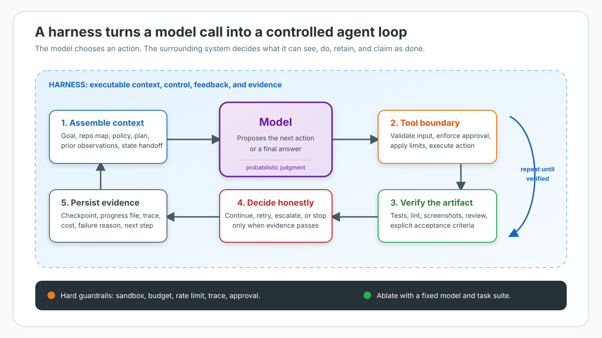
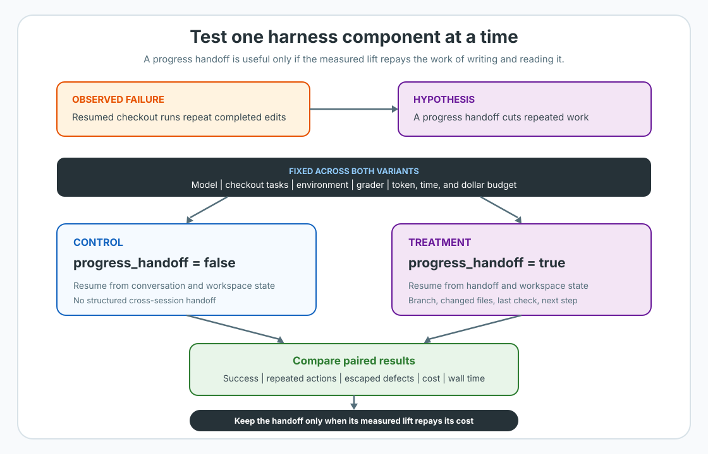

Harness Engineering for AI Agents: Designing the Loop Around the Model
Part 6 of the Engineering the Agentic Stack series
An LLM can suggest a tool call, write a patch, and say the task is done. It can't, by itself, decide which files it may change, retry a flaky API safely, keep a useful handoff for the next session, or prove that the patch works. Those jobs belong to the harness: the software loop around the model.
The model can claim completion before the work satisfies its acceptance criteria. The harness makes that claim testable.
TL;DR: A harness gives an agent context, tools, durable state, checks, and stopping rules. Treat every extra component as a hypothesis about a failure mode: "this model loses state," "this tool flakes," or "self-review misses bugs." Keep the model, task suite, and scoring rule fixed; add or remove one component; then measure task success, escaped defects, cost, wall time, and review effort.

Separate the loop, harness, and runtime
An agent loop repeats a simple sequence: give the model context, let it choose an action, run that action, feed the observation back, and stop only when the work meets the acceptance rule. OpenAI's walkthrough of the Codex agent loop shows that basic shape clearly.
The harness is the executable system that makes the loop reliable. It selects context, exposes actions, validates calls, preserves state, and defines acceptable evidence. The model supplies judgment inside the loop; the harness supplies control and feedback.
That makes it different from two nearby ideas:
| Concept | Main question | Examples |
|---|---|---|
| Reasoning loop | How should the model decide the next move? | ReAct, plan-and-execute, a planner-worker loop |
| Harness | What can the loop see, do, retain, and claim as done? | Tools, prompts, checks, retry logic, evaluator, trace hooks |
| Runtime | Where does the run execute and recover? | Session log, sandbox, checkpoint store, worker, queue |
The boundaries can blur in code. That is fine. The distinction helps when a run breaks. A bad plan calls for a reasoning change. A missing permission check calls for a harness change. A worker crash calls for a runtime change.
OpenAI's harness-engineering case study describes the same idea at a much larger scale: make the application, browser, logs, metrics, tests, and architectural rules visible and enforceable for the agent. It is a useful case study, not a universal recipe. Their task mix and internal tooling are their own.
Put each behavior where it can actually hold
The first harness-design question is simple: how bad is the failure if the model ignores this instruction?
| Put it in | Use it for | Do not rely on it for |
|---|---|---|
| Prompt or skill | Conventions, plan shape, search order, tone, definitions of done | Hard authorization, irreversible actions, cost limits |
| Tool boundary | Typed arguments, narrow operations, audit events, approval gates | Broad repo policy that needs a full build or review |
| Deterministic code | Retries, idempotency, budgets, checkpoints, linters, tests, release gates | Subjective product judgment with no stated rubric |
| Separate evaluator | Fresh-context review, visual QA, adversarial checks, rubric-based acceptance | A slower wrapper around one deterministic function |
A prompt can tell an agent to run tests. A harness can refuse to finish while tests fail. The first is guidance. The second is a property of the system.
This is also why good tool design matters. A narrow tool makes the action easier to describe, validate, approve, and trace. SWE-agent made this point early: a tailored agent-computer interface with focused search and edit operations beat its shell-only no-demonstration baseline on SWE-bench Lite, 18.0% versus 7.33% under the paper's conditions. The interface did not improve the model weights. It made the work less ambiguous.
Do not put a destructive-action guardrail in a long system prompt and call it security. That is a policy memo addressed to a probabilistic process.
State is part of the harness
Long tasks do not fail only because the model made a bad decision. They also fail because the next session starts without the last session's working map.
Agent memory covers the storage side: checkpoints for a run, durable facts for later work, and human-readable files for project knowledge. A harness needs to choose which kind of state the next turn needs. Three patterns solve different problems:
- Compaction shortens an active conversation so the same session can keep going. It helps when the direction is still sound and only the history is too large.
- Progress handoff writes a small artifact for the next worker: a task list,
test log,
PROGRESS.md, or state file. It is useful when a run will cross a session boundary. - Context reset starts a fresh worker and gives it that handoff. It helps when the old conversation carries wrong assumptions or starts wrapping up early.
Anthropic's work on effective long-running harnesses uses explicit artifacts between sessions. Its later harness-design report draws the same line between compaction and a fresh-context handoff.
None of these patterns is mandatory. A short task with a stable environment may need none of them. A multi-hour coding run may need all three. Measure the failure that you are trying to prevent, not the fashionability of the component.
Treat harness parts as hypotheses
Every harness component encodes a claim about the agent:
| Failure you observe | Smallest hypothesis to test | Evidence to collect |
|---|---|---|
| A transient API error ends the run | Bounded retry with clear retryable errors | Success rate, extra calls, wall time |
| The next session repeats work | Write and read a progress handoff | Completed work, resume time, stale decisions |
| The agent says "done" with a broken artifact | Add a check or independent evaluator | Escaped defects, false passes, review minutes |
| The agent edits outside its scope | Narrow the tool and enforce permissions | Blocked actions, policy violations, operator overrides |
| The context becomes noisy | Compact or reset with a structured handoff | Task completion, token use, recovery quality |
Start with the smallest loop that can solve a representative task. Add one component for one observed failure. Then try removing it later. Models improve, tasks change, and last quarter's workaround can become today's latency tax.
This is the point of ablation. Hold the model, task suite, environment, and scoring rule steady. Change one harness component. Run enough trials to see a stable result. Keep the component only if it improves a metric you care about.

The strongest public examples follow this pattern. LangChain reports holding
gpt-5.2-codex fixed and changing only the harness around deepagents-cli,
moving its Terminal-Bench 2.0 score from 52.8% to 66.5%. That is a
vendor-published result, so do not treat it as a universal gain. It does show the
right experimental shape: the model was fixed, the benchmark stayed fixed, and
the harness moved.
Track more than one number. A component that raises success by two points but doubles cost or slows every task may still be wrong for your product. I would track at least:
- task success and escaped defects;
- cost and wall time per completed task;
- retries, tool errors, and policy blocks;
- human review minutes and override rate.
The task suite plays the same role as the eval set in production evaluation: it turns a claim that a system is "better" into a result you can reproduce and inspect.
A passing check is evidence. It is not a character reference for the agent.
Run the ablation lab
The companion project lives here: https://github.com/slavadubrov/harness-demo. It has four configurations and a fixed suite of 12 synthetic tasks. Each task has named failure conditions such as a flaky tool, lost progress, optimistic self-review, or ambiguous acceptance.
This is a deterministic teaching lab. It illustrates the ablation method; it does not call a model, measure a production agent, or predict production-agent performance. The token counts and outcomes are simulated on purpose, so you can inspect the causal assumptions without an API key or a GPU.
Run it from the project directory:
make check
make run
make failures
The first command lints and tests the project. The second prints the summary matrix. The third shows why each configuration fails a task. The full harness passes the synthetic suite, but costs more simulated tokens. That trade-off is the lesson, not a benchmark win.
The core runner makes each assumption explicit:
if task.flaky_tool and not config.retry_policy:
failures.append("flaky tool call was not retried")
if task.needs_progress_file and not config.progress_handoff:
failures.append("next session lost task state")
if task.needs_fresh_evaluator and not config.evaluator:
failures.append("self-review missed an implementation gap")
To turn this method into a production experiment, replace the synthetic suite with tasks sampled from real work and collect actual traces. Keep the same discipline. The code should be boring enough that a future engineer can remove a component with one diff and explain what changed.
Build the loop in this order
For a new agent, do not begin with a planner, a critic, five subagents, and a memory graph. Begin with one capable model, a few narrow tools, a clear task, and one real acceptance check.
When a failure repeats, respond with the smallest enforceable change:
- Add context or a better tool if the model cannot find or express the action.
- Add deterministic code if the action must obey a hard limit or always run a check.
- Add durable state if the work crosses sessions or workers.
- Add a separate evaluator only when fresh judgment catches failures that the generator routinely misses.
- Measure it, then delete the component when it stops paying for itself.
That is harness engineering. You are not trying to make a prompt sound more serious. You are designing the feedback system that turns uncertain model output into work you can inspect, reproduce, and trust.
Key Takeaways
- The harness is the code and conventions around the model: context, tools, state, checks, retries, traces, and stopping rules.
- Keep reasoning-loop problems, harness problems, and runtime problems separate enough that you can fix the right layer.
- Put hard boundaries in tools or deterministic code, not only in prompts.
- Compaction, handoffs, and context resets solve different state failures.
- Every harness component is a hypothesis. Use a fixed-model ablation to decide whether it earns its overhead.
- A synthetic lab can teach the method. It cannot establish production-agent performance.
References
- OpenAI, Unrolling the Codex agent loop.
- OpenAI, Harness engineering: leveraging Codex in an agent-first world.
- Anthropic Engineering, Effective harnesses for long-running agents.
- Anthropic Engineering, Harness design for long-running application development.
- LangChain, Improving Deep Agents with harness engineering.
- Yang et al., SWE-agent: Agent-Computer Interfaces Enable Automated Software Engineering.
- Terminal-Bench, official site and Harbor.